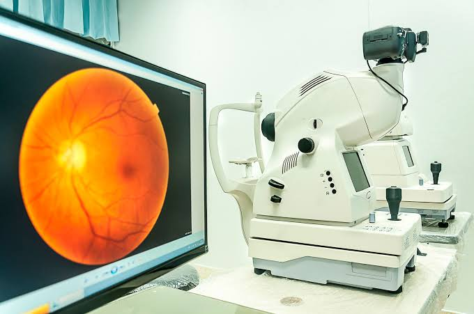

Examen de retina

La retina es una capa sensible a la luz que se encuentra en la parte posterior del ojo y permite captar las imágenes.
El examen de retina ayuda a la especialista a observar esta estructura y detectar posibles alteraciones.